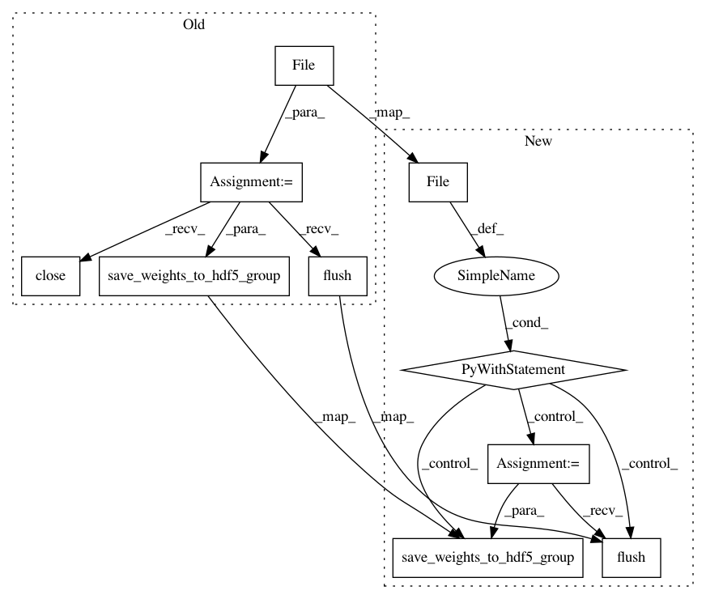

4cde148de0c37981c50f3a8e4a59fa4e5f653e17,keras/engine/topology.py,Container,save_weights,#Container#Any#Any#,2578
Before Change
proceed = ask_to_proceed_with_overwrite(filepath)
if not proceed:
return
f = h5py.File(filepath, "w")
save_weights_to_hdf5_group(f, self.layers)
f.flush()
f.close()
def load_weights(self, filepath, by_name=False,
skip_mismatch=False, reshape=False):
Loads all layer weights from a HDF5 save file.
After Change
proceed = ask_to_proceed_with_overwrite(filepath)
if not proceed:
return
with h5py.File(filepath, "w") as f:
save_weights_to_hdf5_group(f, self.layers)
f.flush()
def load_weights(self, filepath, by_name=False,
skip_mismatch=False, reshape=False):
Loads all layer weights from a HDF5 save file.
In pattern: SUPERPATTERN
Frequency: 3
Non-data size: 10
Instances
Project Name: keras-team/keras
Commit Name: 4cde148de0c37981c50f3a8e4a59fa4e5f653e17
Time: 2018-02-04
Author: bohumir.zamecnik@gmail.com
File Name: keras/engine/topology.py
Class Name: Container
Method Name: save_weights
Project Name: keras-team/keras
Commit Name: 4cde148de0c37981c50f3a8e4a59fa4e5f653e17
Time: 2018-02-04
Author: bohumir.zamecnik@gmail.com
File Name: keras/models.py
Class Name: Sequential
Method Name: save_weights
Project Name: keras-team/keras
Commit Name: d03a41b4262e6aab8ad56cd8395808cacf5921e3
Time: 2017-07-29
Author: inexxt@users.noreply.github.com
File Name: keras/models.py
Class Name:
Method Name: save_model